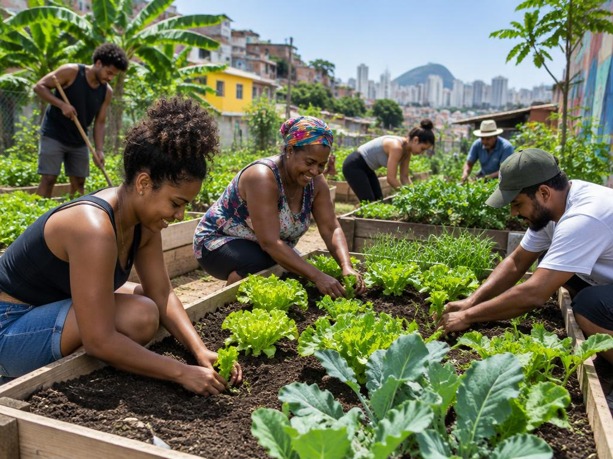

Proposta ilustrativa
Horta Comunitária Urbana
Implantação de canteiros coletivos em bairros urbanos para produção de alimentos saudáveis, educação ambiental e fortalecimento dos laços comunitários.
Objetivos
- Produzir alimentos frescos a baixo custo para as famílias participantes
- Ensinar técnicas de cultivo orgânico e compostagem
- Recuperar espaços ociosos do bairro